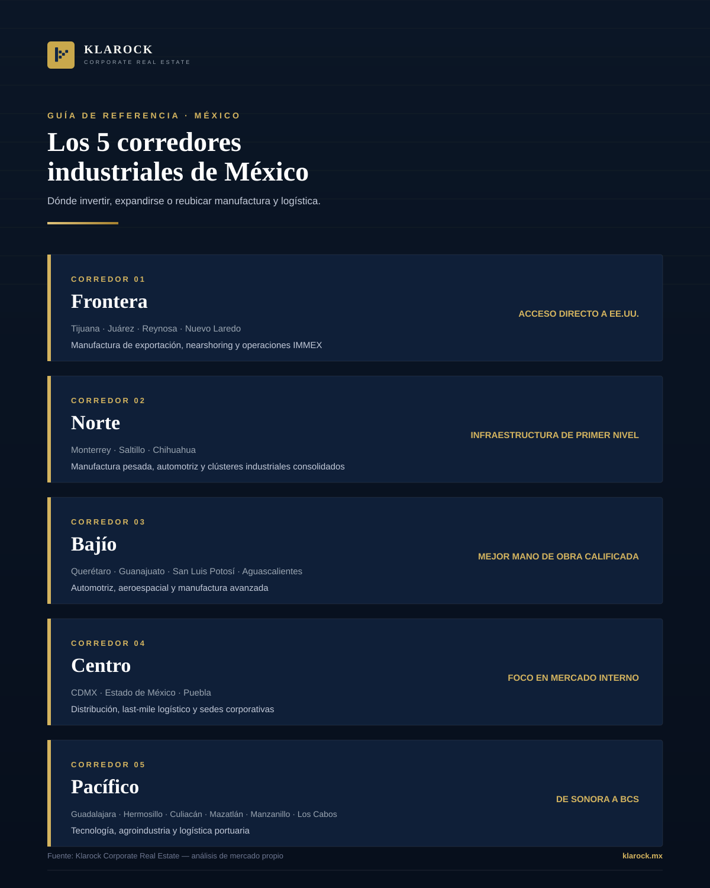
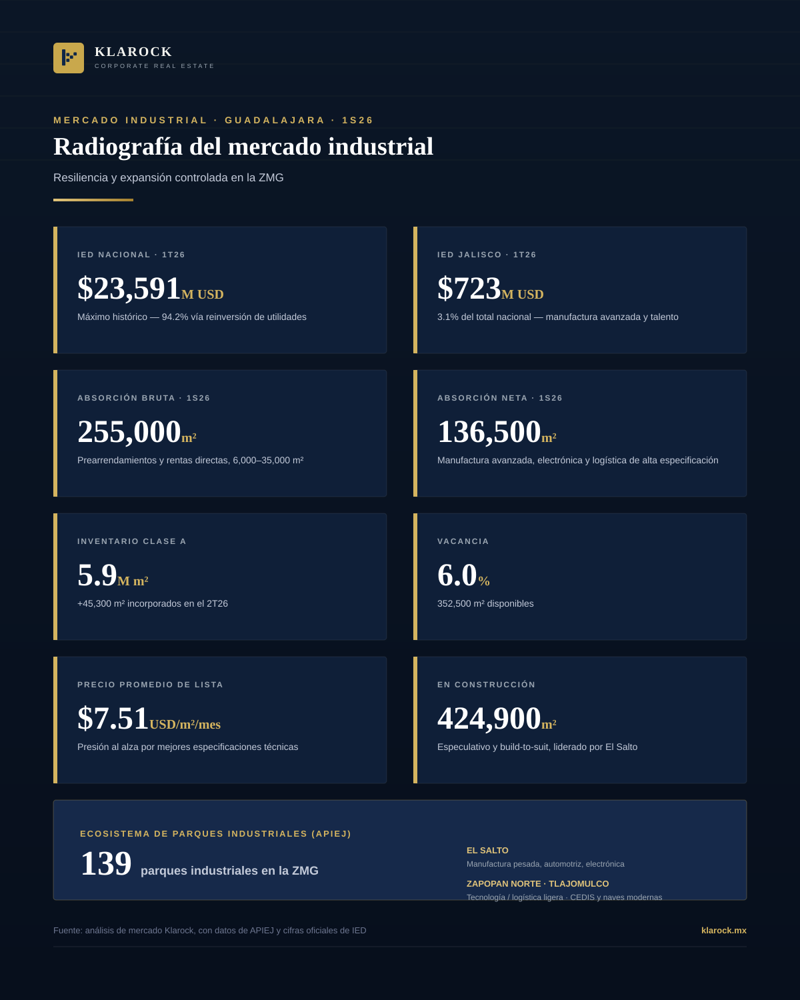
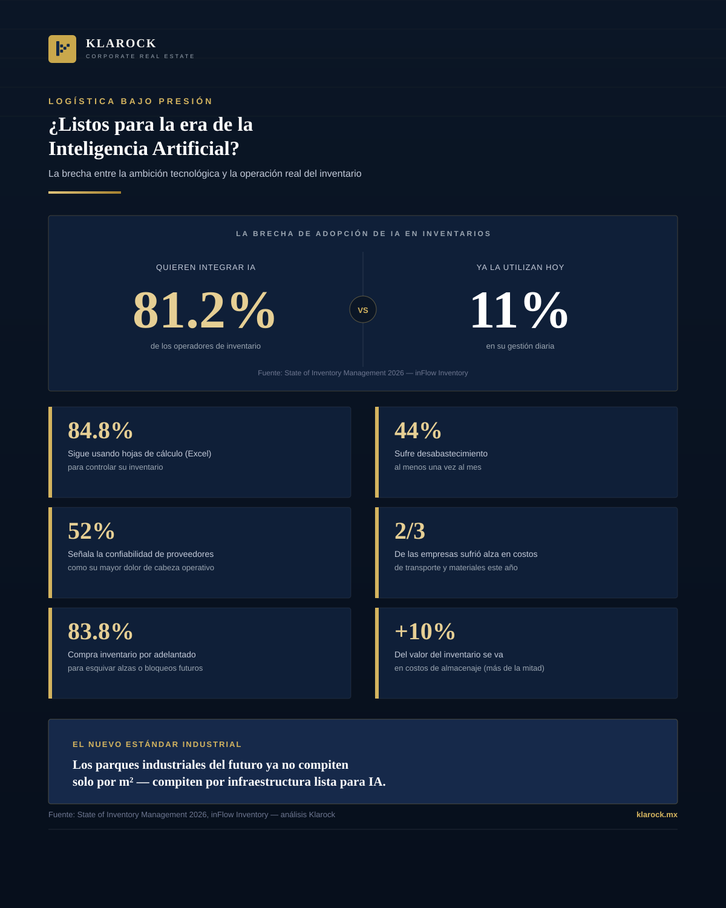
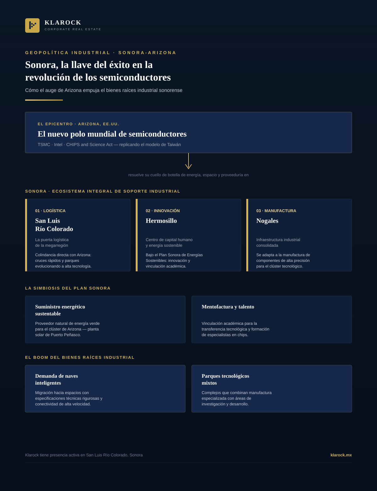
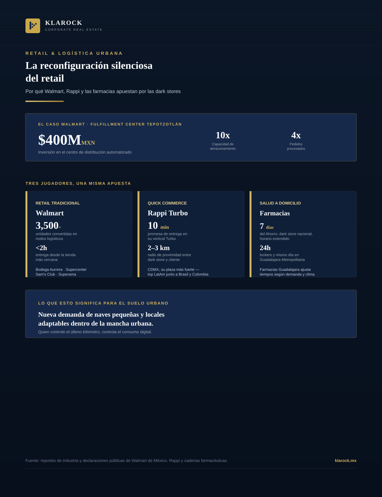
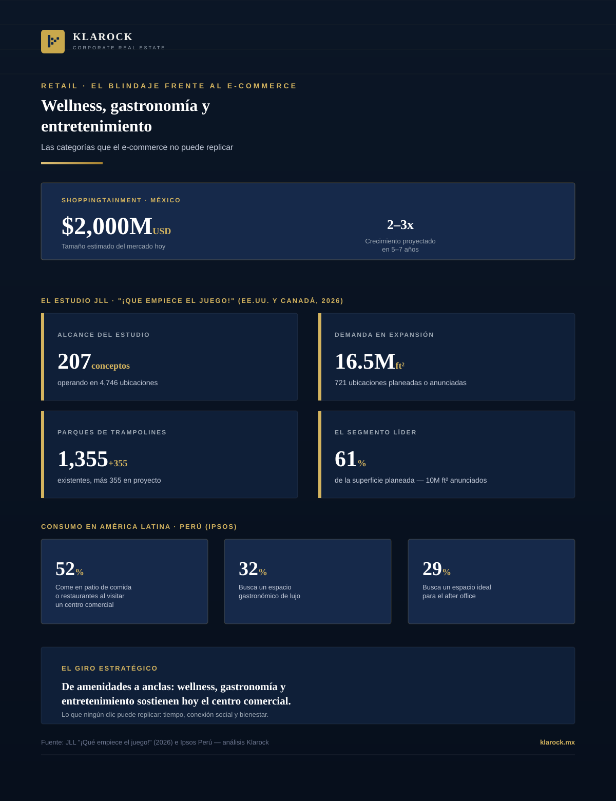
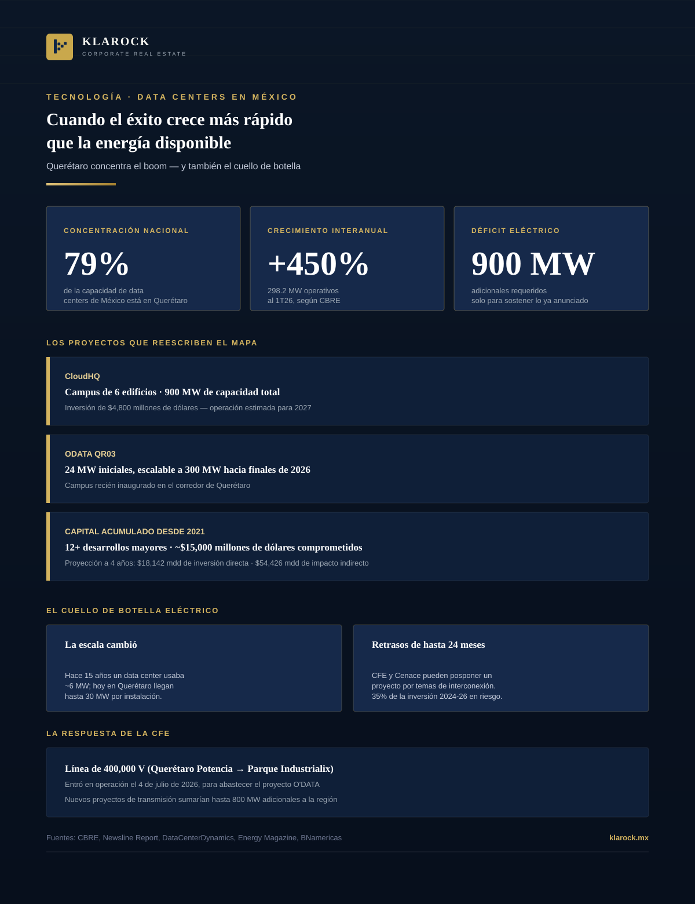
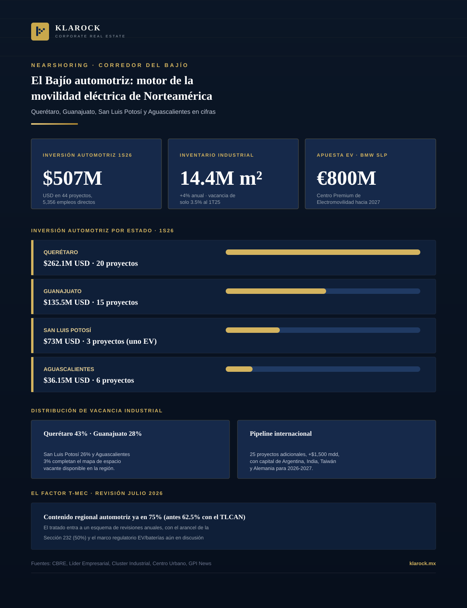

Insights
Infographics and analysis on Mexico's industrial and corporate real estate market — corridors, regulation, nearshoring, and investment trends.

Market · 2026-08-01
A visual reference guide: where to invest, expand, or relocate manufacturing and logistics in Mexico, corridor by corridor.
View infographic →
Market · 2026-08-02
Full analysis of the Guadalajara metro industrial market in the first half of 2026: foreign investment, absorption, Class A inventory, pricing, and the industrial park map by corridor.
View infographic →
Technology · 2026-08-02
81.2% of inventory operators want to integrate artificial intelligence, but only 11% use it today. An analysis of the State of Inventory Management 2026 report and what it means for industrial infrastructure.
View infographic →
Nearshoring · 2026-08-06
Arizona is consolidating as the new global semiconductor hub with TSMC and Intel. Why Sonora — and San Luis Río Colorado in particular — is the logistics piece that makes that growth viable.
View infographic →
Retail · 2026-08-06
Behind the promise of delivery in under 30 minutes lies a deep logistics shift redrawing the commercial map of Mexico's biggest cities: dark stores.
View infographic →
Retail · 2026-08-06
A JLL analysis confirms which categories e-commerce can't replicate. Why wellness, dining, and entertainment went from amenities to anchors of physical retail.
View infographic →
Technology · 2026-08-12
Querétaro holds 79% of Mexico's data center capacity and grew 450% in a single year. CloudHQ is investing $4.8B in a 900 MW campus. But the power grid has already hit its limit — reshaping industrial real estate across the Bajío.
View infographic →
Nearshoring · 2026-08-13
Querétaro, Guanajuato, San Luis Potosí and Aguascalientes logged 44 automotive projects worth $507 million in the first half of 2026. Why the Bajío is now Mexico's most contested industrial corridor — and what the USMCA review means for its future.
View infographic →